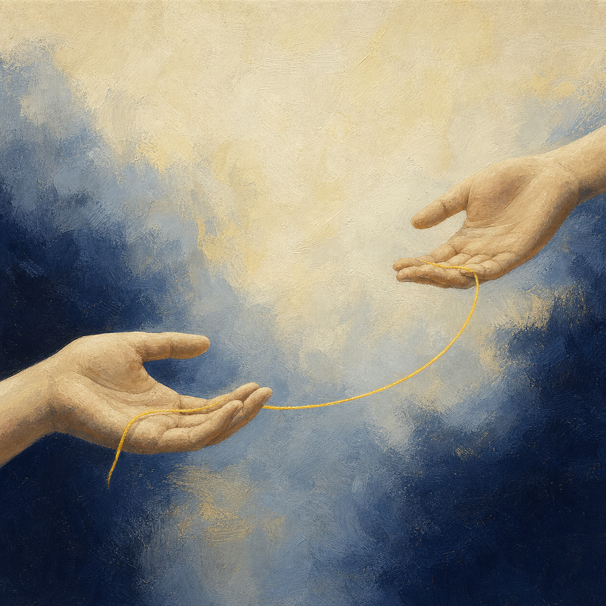

01
존중
국민의 소중한 생명을 보호하고 생명존중문화를 조성하는 일을 모든 예방 활동의 출발점으로 삼습니다.
LINK 01 사람 사이의 링크
재단은 시민의 관심이 안전망으로 이어지도록 교육·모니터링·신고의 공적 경로를 만듭니다. 지켜줌인으로 그 연결에 참여해 주세요.
만 19세 이상 국민 누구나 참여할 수 있습니다.

지켜줌인(人)이란?
한국생명존중희망재단은 국민의 소중한 생명을 보호하고 생명존중문화를 조성하기 위해 자살예방체계를 구축·지원합니다. 지켜줌인은 그 공공적 역할을 시민의 일상 속 모니터링과 신고 행동으로 이어주는 참여 경로입니다.
재단 공식 활동 안내 확인하기02 한국생명존중희망재단의 역할과 공공적 가치
재단은 존중과 공감에서 출발해 협력과 전문성으로 자살예방체계를 운영합니다. 시민의 관심이 교육·모니터링·신고로 이어질 때 생명존중의 가치는 개인의 마음을 넘어 사회의 안전망이 됩니다.
국민의 소중한 생명을 보호하고 생명존중문화를 조성하는 일을 모든 예방 활동의 출발점으로 삼습니다.
위험 신호를 알아차리고 지속적인 관심을 가지며, 필요한 사람을 전문적인 도움으로 연결합니다.
정부·지역사회·민간기관·플랫폼·시민을 연결해 혼자서는 만들기 어려운 예방의 안전망을 넓힙니다.
근거 기반 정책과 교육, 자살정보 분석 및 모니터링 체계로 관심이 실효성 있는 예방 행동이 되게 합니다.
존중·공감·협력·전문성은 선언에 머물지 않고, 시민의 관심을 실제 예방 행동으로 바꾸는 재단의 공공 인프라입니다.
공식 근거 확인하기03 참여 방법
공식 안내에 따라 계정을 준비하고 사전교육을 마치면, 온라인 모니터링과 신고 활동을 시작할 수 있습니다.
봉사활동 실적 연계를 위해 1365 자원봉사포털 계정을 준비합니다.
미디어 자살정보 모니터링 시스템에 가입하고 활동 준비를 마칩니다.
사전교육을 이수한 뒤 온라인 모니터링과 신고 활동을 시작합니다.
준비되셨나요? 정확한 가입 절차와 최신 활동 조건은 재단 공식 안내에서 확인하세요.
지켜줌인 활동 안내 보기04 활동 내용
복잡한 설명보다 실제 활동을 한눈에 이해할 수 있도록 공식 안내의 핵심만 세 가지로 정리했습니다.
SNS·포털·커뮤니티 등 온라인 공간의 자살유발·유해정보를 살펴봅니다.
발견한 정보는 해당 매체의 신고 기능을 통해 조치 요청합니다.
활동 내용을 미디어 자살정보 모니터링 시스템에 기록합니다.
이미 신고할 정보가 있나요?
신고 접수와 확인은 한국생명존중희망재단의 미디어 자살정보 모니터링 시스템에서 진행됩니다.
05 연결망의 확장
지켜줌인은 개인의 관심을 교육과 정보, 현장의 실천으로 잇는 재단의 참여 경로입니다. 연결된 행동이 생명존중문화를 넓힙니다.
SIMS에서 활동 시작하기사람 사이의 링크
당신의 관심을 지켜줌인 활동과 공식 신고로 연결해 주세요.